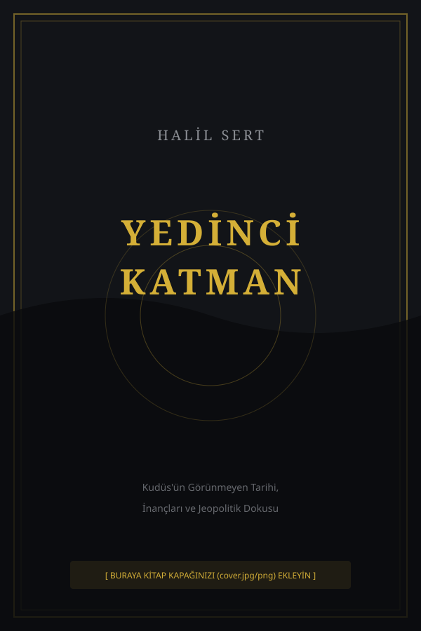

Belki sandık bulunmak için değil, sorulmak için saklıdır.
Kudüs'ün Görünmeyen Tarihi, İnançları ve Jeopolitik Dokusu

"Tarihin üstünü örtenler için değil, altını kazıyanlara.
Kazarken de gördükleri için cevap arayanlara..."
Yedinci Katman, Kudüs'ün altında yatan yedi arkeolojik katmanın ve bunların tarihsel, dinsel, jeopolitik anlamlarının kapsamlı bir araştırmasıdır. Kronolojik bir anlatımın ötesine geçerek çağdaş jeopolitik üzerindeki gizli bağlantıları ve sembolleri açığa çıkarır.
Tapınak Şövalyelerinden Rothschild ailesine, Siyonizm'in doğuşundan Ahit Sandığı'nın gizemine kadar uzanan bu eser, cevaptan çok sorunun peşindedir.
MÖ 3000'den Günümüze: Kimin Şehri?
Fakir başladılar, dünyayı satın aldılar
Roma'nın ateşi ve 2000 yıllık sürgün
Menorah'dan Hollywood'a: Büyük Miras
Herzl, Rothschild ve Balfour Deklarasyonu
4 Teori ve Bakır Rulo'nun Sırrı
Yahudi İnancında Mesih ve Armageddon